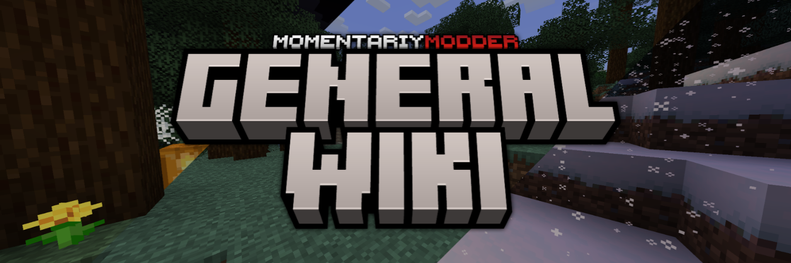

<!--
MomentariyModder Website 8.0.0 by MomentariyModder
The source code is available on GitHub!
-->

<!DOCTYPE html>
<html lang="en">
<head>
  <link rel="icon" href="../img/themes/active/favicon.png">
  <title>General | Wiki | MomentariyModder</title>
  <meta name="viewport" content="width=device-width, initial-scale=1, maximum-scale=1" />
  <meta name="title" content="General | Wiki | MomentariyModder">
  <meta name="description" content="Hello, my name is MomentariyModder, or, as my friends and acquaintances often call me, Modder. I am passionate about creating mods and servers, and I used to work with modpacks and resource packs.">
  <meta name="keywords" content="Minecraft, Mods, MomentariyModder">
  <meta name="theme-color" content="#4bb4f1">


  <script src="https://code.jquery.com/jquery-3.3.1.min.js"></script>
  <script src="https://cdn.jsdelivr.net/npm/handlebars@latest/dist/handlebars.js"></script>
  <script src="https://mcapi.us/scripts/minecraft.min.js"></script>
  <script src="../js/main.js"></script>
  <script src="../config.js"></script>
  <script src="../js/lightbox.min.js"></script>
  <script src="https://cdn.jsdelivr.net/npm/@widgetbot/crate@3" async defer>
  new Crate({
    server: '696094539823448085',
    channel: '1156033421940891688'
  })
  </script>
 
  <script>tosAgreed = true</script>
 
  <link rel="stylesheet" href="https://cdnjs.cloudflare.com/ajax/libs/font-awesome/7.0.1/css/all.min.css"/>
  <link rel="stylesheet" href="../css/style.css">
  <link rel="stylesheet" href="../config.css">
  <link href="css/lightbox.css" rel="stylesheet" media="all">

</head>


<body>

  <div id="target"></div>

  <script id="template" type="text/x-handlebars-template">

  <header>
    <div class="hero" id="hero">
      <a href="#!"><h1 style="padding-top: 3%;"></h1></a>
    <p> </p>
    <div class="news-card" align="center">
	  <a href="../" class="btn"><i class="fa-solid fa-house"></i> Home</a>
      <a href="../wiki" class="btn"><i class="fa-solid fa-book"></i> Wiki</a>
	  <a href="#links" class="btn"><i class="fa-solid fa-share"></i> Links</a>
    </div>
	<p> </p>
	</div>
  </header>
  
  <section class="dark" id="projects">
	<h1><i class="fa-solid fa-book"></i> Wiki</h1>
	<div id="news">
    <div class="news-card" id="sc">
	
    <p> </p>
	<a href="#general-changelog" class="btn">Changelog format</a>
	<a href="#general-file-name" class="btn">File name format</a>
	<a href="#general-license" class="btn">License</a>
	<a href="#general-status" class="btn">Project support status</a>
	<a href="#general-versioning" class="btn">Versioning</a><br>
	This wiki describes general information about the implementation of my projects.
	</div>
	<p> </p>
	<div class="news-card">
	<h2 id="general-changelog">Changelog format</h2><br>
    The Minecraft Wiki format was used as a basis for introducing pages describing changes in a particular version, as well as changes in a particular update.</br></br>
	The format itself is as follows:.</br></br>
	<hr>
	<h1>{Project version}:{Update name (optional)}</h1><br>
	<h2>## {Section*}</h2><br>
	<h3>### {Subsection**}</h3><br>
	<b>**{Change***}**</b><br>
	{Change description (optional)****}<br><br>
	{Update poster (optional)}
	<hr><br><br>
	* Section - part of the change log that divides it into update categories. The sections are as follows: Additions, Changes, Fixes, and Notes.<br>
	** Subsection - part of the change log that divides the section into change types. The types themselves depend on the changes in the game. The types are as follows: Blocks, Items, Mobs, World generation, Gameplay, Command format, Compatible, and General.<br>
	*** Change - part of the change log that describes a particular change in the project update.<br>
	**** Change description - part of the change log that describes the change itself.
	</div>
	<p> </p>
	<div class="news-card">
	<h2 id="general-file-name">File name format</h2><br>
    The format is as follows:</br></br>
	<hr>
	<h2>[{Loader (optional)*} {Minecraft version}]{Project name}[{Project version}].{File type**} </h2>
	<hr></br>
	* Loader - the API on which the project runs. There are three of them: NeoForge, LexForge** and Fabric/Quilt.</br>
	** LexForge - one of the variants of the MinecraftForge name was chosen in honor of the current owner of the downloader, who is known for some rather unsavory reasons.<br>
	*** File type - file types are divided into jar (mods) and zip/mrpack (modpacks and resource packs).
	</div>
	<p> </p>
	<div class="news-card">
	<h2 id="general-license">License</h2><br>
    A license is an official permit to carry out a certain type of activity.</br>
    Until 11 February 2025, the most popular license was used, namely All rights reserved. After that, I started using my own license.</br></br>
	Here are the licenses themselves:</br>
	<hr>
	<details>
    <summary><a align="center">MomentariyModder License VERSION 2.0.0</a></summary>
    <div>
	<details>
    <summary><a align="center">In English</a></summary>
    <div>
	MomentariyModder License<br>
    VERSION 2.0.0 - 05.04.2026<br><br>
	Copyright &copy; 2026 MomentariyModder.<br><br>
	Non-commercial use only. The original work may not be used for commercial purposes without permission from the project author.<br>
	No derivative works. Derivative works may not be distributed without the project author’s permission.<br>
	No distribution. The original work may not be distributed without the project author’s permission.<br>
	This is not an official Minecraft product. We are in no way affiliated with or endorsed by Mojang Synergies AB, Microsoft Corporation, or other rights holders.<br><br>
	THE SOFTWARE IS PROVIDED “AS IS,” WITHOUT WARRANTY OF ANY KIND, EXPRESS OR IMPLIED, INCLUDING BUT NOT LIMITED TO THE WARRANTIES OF MERCHANTABILITY, FITNESS FOR A PARTICULAR PURPOSE, AND NON-INFRINGEMENT. IN NO EVENT SHALL THE AUTHORS OR COPYRIGHT HOLDERS BE LIABLE FOR ANY CLAIM, DAMAGES, OR OTHER LIABILITY, WHETHER IN AN ACTION OF CONTRACT, TORT, OR OTHERWISE, ARISING FROM, OUT OF, OR IN CONNECTION WITH THE SOFTWARE OR THE USE OR OTHER DEALINGS IN THE SOFTWARE.
	</div>
    </details>
	<br>
	<details>
    <summary><a align="center">На русском языке</a></summary>
    <div>
	MomentariyModder License<br>
    ВЕРСИЯ 2.0.0 - 05.04.2026<br><br>
	Copyright &copy; 2026 MomentariyModder.<br><br>
	Только для некоммерческого использования. Использование оригинального произведения в коммерческих целях без разрешения автора проекта запрещено.<br>
	Запрет на создание производных работ. Производные работы не могут распространяться без разрешения автора проекта.<br>
    Запрет на распространение. Оригинальная работа не может распространяться без разрешения автора проекта.<br>
    Это не является официальным продуктом Minecraft. Мы никоим образом не связаны с Mojang Synergies AB, Microsoft Corporation или другими правообладателями и не поддерживаемся ими.<br><br>
	ПРОГРАММНОЕ ОБЕСПЕЧЕНИЕ ПРЕДОСТАВЛЯЕТСЯ «КАК ЕСТЬ», БЕЗ КАКИХ-ЛИБО ГАРАНТИЙ, ЯВНЫХ ИЛИ ПОДРАЗУМЕВАЕМЫХ, ВКЛЮЧАЯ, ПОМИМО ПРОЧЕГО, ГАРАНТИИ ТОВАРНОГО СОСТОЯНИЯ, ПРИГОДНОСТИ ДЛЯ ОПРЕДЕЛЕННОЙ ЦЕЛИ И НЕНАРУШЕНИЯ ПРАВ. НИ В КОЕМ СЛУЧАЕ АВТОРЫ ИЛИ ПРАВООБЛАДАТЕЛИ НЕ НЕСУТ ОТВЕТСТВЕННОСТИ ЗА ЛЮБЫЕ ПРЕТЕНЗИИ, УБЫТКИ ИЛИ ИНУЮ ОТВЕТСТВЕННОСТЬ, БУДЬ ТО В РАМКАХ ИСКА О НАРУШЕНИИ ДОГОВОРА, ДЕЛИКТА ИЛИ ИНОГО, ВОЗНИКШИЕ ИЗ-ЗА, В РЕЗУЛЬТАТЕ ИЛИ В СВЯЗИ С ПРОГРАММНЫМ ОБЕСПЕЧЕНИЕМ ИЛИ ИСПОЛЬЗОВАНИЕМ ИЛИ ИНЫМИ ДЕЙСТВИЯМИ С ПРОГРАММНЫМ ОБЕСПЕЧЕНИЕМ.
	</div>
    </details>
	<br>
	<details>
    <summary><a align="center">Українською мовою</a></summary>
    <div>
	MomentariyModder License<br>
    ВЕРСІЯ 2.0.0 - 05.04.2026<br><br>
	Copyright &copy; 2026 MomentariyModder.<br><br>
	Виключно для некомерційного використання. Оригінальний твір не може використовуватися в комерційних цілях без дозволу автора проекту.<br>
	Заборонено створювати похідні роботи. Похідні роботи не можуть бути розповсюджені без дозволу автора проекту.<br>
    Заборонено розповсюджувати. Оригінальна робота не може бути розповсюджена без дозволу автора проекту.<br>
    Це не є офіційним продуктом Minecraft. Ми жодним чином не пов'язані з Mojang Synergies AB, Microsoft Corporation або іншими правовласниками та не підтримуємося ними.<br><br>
	ПРОГРАМНЕ ЗАБЕЗПЕЧЕННЯ НАДАЄТЬСЯ «ЯК Є», БЕЗ ЖОДНИХ ГАРАНТІЙ, ЯВНИХ ЧИ ПРИПУЩЕНИХ, ВКЛЮЧАЮЧИХ, АЛЕ НЕ ОБМЕЖУЮЧИХСЯ ГАРАНТІЯМИ КОМЕРЦІЙНОСТІ, ПРИДАТНОСТІ ДЛЯ КОНКРЕТНОЇ МЕТИ ТА НЕНАРУШЕННЯ ПРАВ. У ЖОДНОМУ ВИПАДКУ АВТОРИ АБО ВЛАСНИКИ АВТОРСЬКИХ ПРАВ НЕ НЕСУТЬ ВІДПОВІДАЛЬНОСТІ ЗА БУДЬ-ЯКІ ПРЕТЕНЗІЇ, ЗБИТКИ АБО ІНШУ ВІДПОВІДАЛЬНІСТЬ, БУДЬ ТО В РАМКАХ КОНТРАКТУ, ДЕЛИКТУ АБО ІНШОГО, ЩО ВИНИКАЮТЬ З, ВНАСЛІДОК АБО У ЗВ’ЯЗКУ З ПРОГРАМНИМ ЗАБЕЗПЕЧЕННЯМ АБО ЙОГО ВИКОРИСТАННЯМ АБО ІНШИМИ ОПЕРАЦІЯМИ З НИМ.
	</div>
    </details>
	</div>
    </details>
	<br>
	<details>
    <summary><a align="center">MomentariyModder License</a></summary>
    <div>
	MomentariyModder License<br>
    VERSION 1.0.0 - 11.02.2025<br><br>
	Copyright &copy; 2025 MomentariyModder. All Rights Reserved.<br><br>
	1. This project is not an official product of Minecraft and Mojang Studios.<br>
	2. This project can be used in modpacks and videos, but it is recommended to provide a link to it.<br>
	3. This project can not be published on third-party sites, the exception is: sites like Aternos and if the publication on third-party sites by the author himself.<br>
	4. Creation of forks, backports and ports without authorization of the author is forbidden.<br>
	5. Creation of addons is welcomed and does not require author's permission.<br>
	6. Using the assets of this project in your own projects without authorization is prohibited.
	</div>
    </details>
	<br>
	<details>
    <summary><a align="center">All Rights Reserved</a></summary>
    <div>
	All Rights Reserved unless otherwise explicitly stated.
	</div>
    </details>
	<hr>
	</div>
	<p> </p>
	<div class="news-card">
	<h2 id="general-status">Project support status</h2><br>
	<br>
	Basic information about support status is already indicated in the image above.<br><br>
	<b>About support for new versions of Minecraft.</b><br>
	Currently, I only support the stable version of NeoForge, and I also plan to update my projects to the next stable version for modding. For now, everyone is using 26.1. However, I do not plan to discontinue support for 1.21.1 when the new stable version is released. The initial plan to support both the stable version and the latest version simultaneously has been canceled for now.
	</div>
	<p> </p>
	<div class="news-card">
	<h2 id="general-versioning">Versioning</h2><br>
	The versioning is presented as follows:<br>
	<hr>
	<h2>{Major*}.{Minor**}.{Hotfix***}</h2>
	<hr><br>
	* Major - a version where backward incompatible API changes have been made. In our case, this is an update to new versions of Minecraft. There was one exception, which was the transition from Minecraft version 1.19.2 to 1.19.4, when the change was reflected in Minor.<br>
	** Minor - a version where new functionality is added or old functionality is changed.<br>
	*** Hotfix - a version where bugs are fixed.
	</div>
	<p> </p>
    <div class="news-card">
	<h2 id="general-faq">FAQ</h2>
	<details>
    <summary>Will your projects be ported to Fabric/Quilt?</summary>
    <div>
	There used to be a port for Minecraft version 1.20.1, but support was discontinued for the reasons stated in this <a href="../blog/discontinuing-fabricquilt">post</a>. In 2025, Goldorion's Fabric Generator was unexpectedly revived and rewritten for the new version of Minecraft 1.21.8, but there are no plans to return ports to new versions of Minecraft for Fabric/Quilt. More details about this can be found in this <a href="../blog/important-announcements">post</a>.
    </div>
    </details>
	<br>
	<details>
    <summary>Why are projects no longer being ported to Forge from Minecraft version 1.20.4?</summary>
    <div>
	There are several reasons. Forge is outdated and has many bugs. Also, the current owner of Forge, LexManos, has behaved inappropriately towards mod developers, to say the least. For example, he easily banned people from the Forge Discord (now NeoForge Discord) for discussing Fabric. Lex also caused a conflict with JellySquid, the developer of Sodium and Lithium, which is why we never saw these mods on Forge. And that's just a small part of what happened. Another reason is MCreator, the developers of the program have discontinued support for Forge in favor of a new loader - NeoForge*. Starting with Minecraft version 1.20.4, my projects exclusively support NeoForge.<br>
    *NeoForge is a fork of Forge created by cpw and a large part of the old Forge team. More details about the reasons are given in this <a href="https://neoforged.net/news/theproject/">post</a> on the NeoForged website.
	</div>
    </details>
	<br>
	<details>
    <summary>Will your projects be ported to Minecraft: Bedrock Edition?</summary>
    <div>
	No. All my projects are exclusive to Minecraft: Java Edition.
	</div>
    </details>
	<br>
	<details>
    <summary>Can I add my projects to your modpacks?</summary>
    <div>
	Of course you can, I'd be happy to see my projects in your modpacks.
	</div>
    </details>
	<br>
	<details>
    <summary>Where can I find more detailed information about your mods, besides the pages on Modrinth and CurseForge?</summary>
    <div>
	On my wiki, there's a lot of interesting stuff there. Link: <a href="../wiki">momentariymodder.com/wiki</a>
	</div>
    </details>
	<br>
	<details>
    <summary>Do you support new versions of Minecraft?</summary>
    <div>
	Minecraft currently has a new update system, namely drops (and maybe someday there will be a major update). Due to frequent drops and many technical changes, it is becoming more difficult to add support for new versions of Minecraft in MCreator. This makes it harder for me to update projects, as I have to wait for MCreator updates as well as plugins for them. I plan to update my projects to the next stable version for modding; many people are now using 26.1. However, at the moment, I only support 1.21.1.
	</div>
    </details>
    </div>
	</div>
  </section>
  <section class="dark">
	<div class="news-card" align="center">
	<a href="../wiki" class="btn2"><i class="fa-solid fa-arrow-left"></i> Back to Wiki</a>
	</div>
  </section>
  
  <section class="light">
    <h1><i class="fa-solid fa-share"></i> Links</h1>
    <div id="links" align="center">
	  <a href="https://discord.com/invite/9XqgjRd"></a> 
	  <a href="https://t.me/momentariymodder"></a> 
	  <a href="https://twitter.com/momentariymoder"></a>
	  <a href="https://bsky.app/profile/momentariymodder.bsky.social"></a>
	  <a href="https://modrinth.com/user/momentariymodder"></a>
	  <a href="https://www.curseforge.com/members/momentariymodder"></a>
	  <a href="https://github.com/MomentariyModder"></a>
	  <a href="https://patreon.com/momentariymodder"></a>
	  <a href="https://boosty.to/momentariymodder"></a>
	  <a href="https://ko-fi.com/momentariymodder"></a>
	  <a href="https://www.buymeacoffee.com/momentariymodder"></a>
	  <a href="https://www.donationalerts.com/r/momentariymodder"></a>
    </div>
  </section>
  
  
  <footer>
    <a>&copy; {{server_port}} {{server_name}}. All Rights Reserved.</br>Not an official Minecraft product. We are in no way affiliated with or endorsed by Mojang Synergies AB, Microsoft Corporation or other rightsholders.<br>{{server_ip}}</a>
	<a></a>
	
  </footer>
  </script>
  <script src="../js/license.js"></script>
  
</body>
</html>